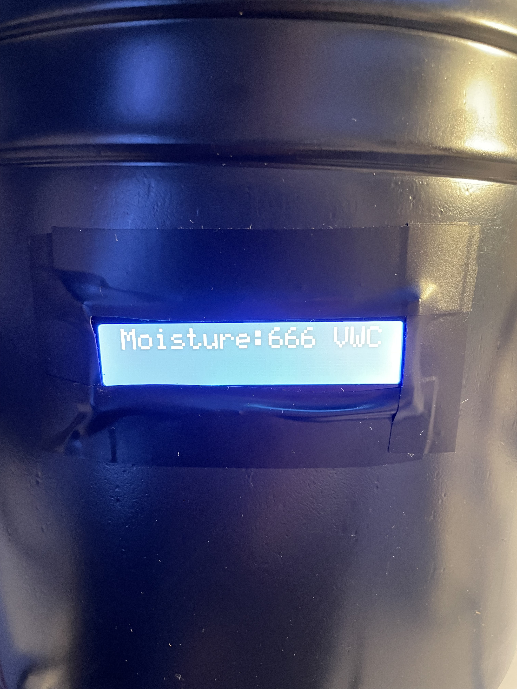
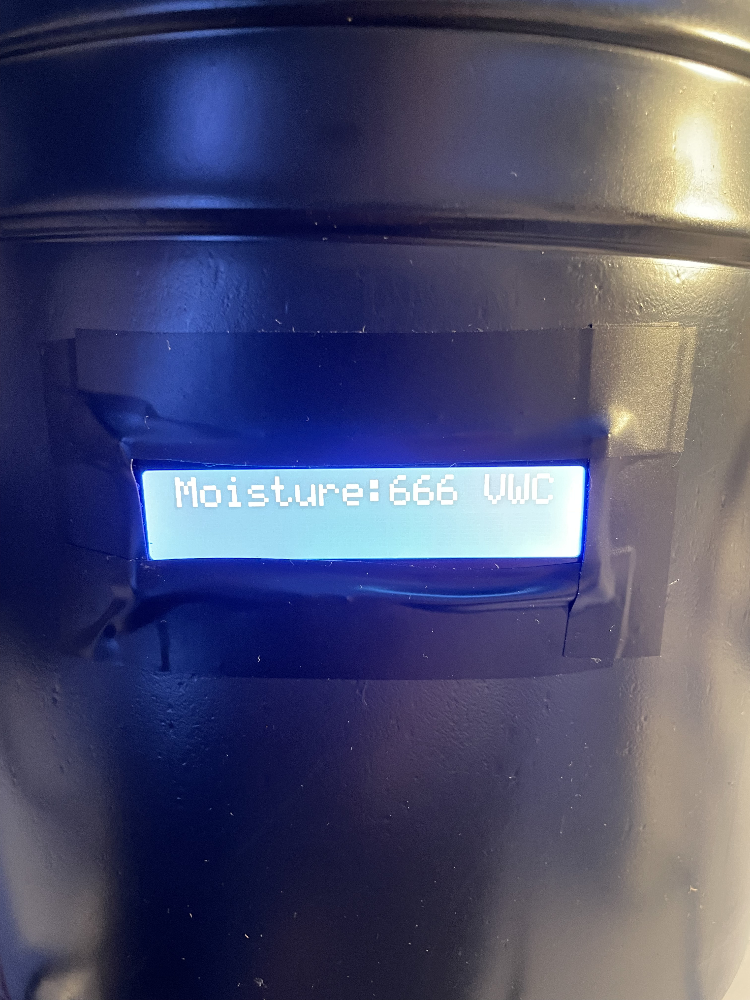

Overview
This project automatically waters a plant based on moisture levels in the soil. Designed using Arduino, it uses a moisture sensor, a relay, and a submersible pump to activate watering when dryness is detected.
Photos
 


Parts Used
- Arduino Uno
- Soil Moisture Sensor
- 5V Relay Module
- Submersible Pump
- 12V Power Supply
- Water reservoir + tubing
How It Works
The sensor monitors the soil’s moisture content. When the value drops below a predefined threshold, the Arduino signals the relay to activate the pump. Once moisture levels rise, the pump is turned off to conserve water and power.